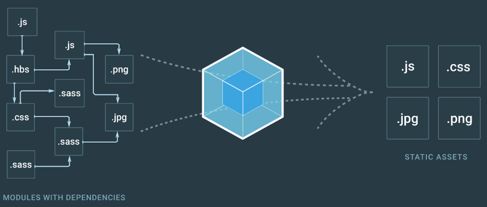

Webpack comme des grand·e·s !
Un atelier de Christophe Porteneuve at Paris Web 2017
Un atelier de Christophe Porteneuve at Paris Web 2017
const christophe = {
family: { wife: 'Élodie', son: 'Maxence' },
city: 'Paris, FR',
company: 'Delicious Insights',
trainings: [
'Web Apps Modernes', 'Node.js', 'Git Total',
'ES Total', 'Webpack'
],
webSince: 1995,
claimsToFame: [
'Prototype.js',
'Ruby On Rails',
'Prototype and Script.aculo.us',
'Paris Web',
'NodeSchool Paris'
],
}
Webpack est un
bundler, pas un
task runner
(De ce point de vue, il se rapproche de Brunch et Broccoli)
Intérêt : moins de config, plus d’optimisations possibles
Vitesse
Hot Module Replacement (HMR)
Approche graphe (on y vient)
Richesse d’optimisations proposées
(en particulier autour du
bundle splitting et
code splitting)

L’intégration du serveur de dev aux nôtres
Les finesses de gestion du HMR
Les parallélisations et mises en cache
L’externalisation et les cibles alternatives de build
Le code splitting
Les passerelles avec React (notamment React-Router et Redux)
Les loaders et plugins personnalisés
…
node -v
8.6.0
npm -v
5.4.2
git clone https://github.com/deliciousinsights/pw2017-webpack
cd pw2017-webpack
npm install
Juste un module CommonJS
On est donc libres de construire l’objet exporté comme on veut !
Peut donc être hyper dynamique, réactif à l’environnement, etc.
A minima :
module.exports = {
entry: …, // Chemin(s) absolu(s) de « module »
output: {
path: '…', // Chemin absolu du dossier destinataire
filename: '…',
}
}
On se pond deux fichiers sources, une mini-config, et on scripte…
Y’a quoi exactement dans le bundle ?
Quand Webpack se soucie-t-il de mes nouveaux fichiers ?
Le watcher simple dans un premier temps
À plein de trucs :
Surveiller les fichiers et déclencher des
rebuilds
(attention à la sauvegarde automatique dans votre EDI/éditeur)
Fournir un service HTTP par-dessus nos builds
Builder en mémoire pour aller plus vite, garder en cache au passage
Faire du rafraîchissement automatique
Permettre d’aller plus loin avec le Hot Module Replacement
Installation
Lancement
Le rafraîchissement basique
Ne rien louper avec l’overlay
Principes
Mise en place côté Webpack
Activation côté client
Mieux voir quels modules sont renvoyés
Que renvoie-t-on quand ?
git reset --hard debut-etape-3
npm install
Des CSS « nues »
Qu’est-ce qu’un loader ?
style-loader vs. css-loader
Constater le résultat
Juste un loader en plus…
Principes
Configurer Autoprefixer comme plugin
Browserlist
Définir nos exigences de compatibilité
Exemple avec
display: flex
css-loader et
importLoaders
Le réglage global
La nécessité de drapeaux par loader de style…
Ça commence à pas mal grandir…
Si ça continue on va se croire dans Gulp !
En plus y'a la question de la bascule de mode développement / production
Comment s’y retrouver ?
Comment éviter le copier-coller bête d’un projet à l’autre ?
npm install --save-dev webpack-mergeLa difficulté de base : extraire les multiples impacts d’une configuration précise (ex. HMR, extraction CSS…)
Le module permet d’exprimer des ensembles de fragments de configuration, injectables à l’envi.
Je vous déroule le refactoring de découpe…
Exporter une fonction
Le drapeau
--env
Factoriser nos configurations de développement vs. production
extract-text-webpack-plugin
Deux parties : l’extracteur et les appels à l’extraction
Ajustement de notre configuration de production
git reset --hard etape-4
git reset --hard debut-etape-5
npm install
Que fait le premier ?
Pourquoi préférer le second ?
Configuration avec une limite utile
Examiner la différence
Et pour le build de production ?
On examine toutes les syntaxes
url(…)
Super pratique !
On peut même aller chercher la même fonctionnalité pour les sources d’images dans HTML, JSX…
Ajout et configuration
Presets
Le preset
env
Peut-on réutiliser
.browserslistrc ?
Intérêt et limites actuelles
Exemple avec divers imports de lodash
Passer en syntaxe modules… mais pas partout ?
Impact sur le rebuild
UglifyJS, sa vie, son œuvre
Babili ? Un autre ?
Activer les source maps quand même…
Environnements et code mort en production
cssnano est déjà utilisable
Avec un peu de config : clean-css, etc.
Comment activer la minification intégrée aux loaders ?
On ne va pas s’y amuser, mais y’a plein d’options, par exemple :
…
C’est quoi, « vendorer » ?
CommonsChunkPlugin
Principes de fonctionnement
Mise en œuvre dans notre projet
Pourquoi mettre des hashes dans les noms de fichiers ?
hash,
chunkhash et
contenthash
Limitation de la taille de hash utilisée
Mise en œuvre
Soucis avec les noms qui changent tout le temps…
html-webpack-plugin
clean-webpack-plugin
Extraction futée du manifeste pour des mises à jour ciblées
Christophe Porteneuve
Les slides sont sur
bit.ly/pw-webpack